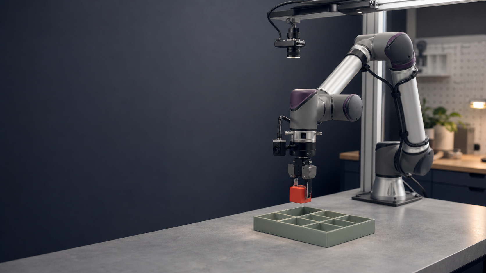

1
Ingest
fm-data dropped a duplicate
firstmotive
I tested it on four public datasets. Qualia produced six verified episodes. The other sources exposed missing success evidence, failed outcomes, motion defects, and missing camera data.

The engine
Each source arrived with different formats, clocks, vectors, and evidence.
fm-data checks whether the timestamps line up, then maps each source into one common shape without changing the original files.
fm-data records a decision and the supporting evidence for every episode.
fm-data reopened the clean dataset to confirm another tool could read all six episodes, then checked the recorded reason for each decision.
The original files stay untouched. fm-data writes repairs and decisions into the canonical dataset.
Seven checks
Public data pipeline
Correction: the animation's "28 in → 8 clean" predates the frozen receipts. The verified result is six emitted episodes from 32 inputs — only the idle-trim repair is emit-eligible.
fm-data accounted for all 13 inputs: 5 kept, 3 repaired, 4 held for review, and 1 dropped. It wrote six episodes to the clean dataset and opened all six again successfully.
The episode was readable and its movement looked possible, but the source did not prove success. fm-data held it instead of guessing.
fm-data removed four known failures and let four labelled successes continue. It then stopped those successes before final output because the required camera evidence was missing.
Ten action-only simulations tested the motion check. fm-data found sharp movement changes and recorded them, but the source lacked enough evidence for training-ready output.
Demo summary · seven checks
fm-data dropped a duplicate
fm-data checked 50 Hz and 20 Hz streams on one timeline
fm-data repaired one clearly recoverable reading
fm-data found idle, jerk, and command-following faults
fm-data held a task that could not be verified
fm-data checked success labels against task evidence
fm-data held frozen and incomplete visual records
One reason explains one episode. Repeated reasons expose capture problems. A rising straight-pass rate shows that the recorder and capture instructions are improving.
06 · Questions + Discussion
One First Motive recorder session and one reviewer will give us the next proof.
I tested data preparation and evidence handling. I have not tested model uplift or acceptance on First Motive hardware.